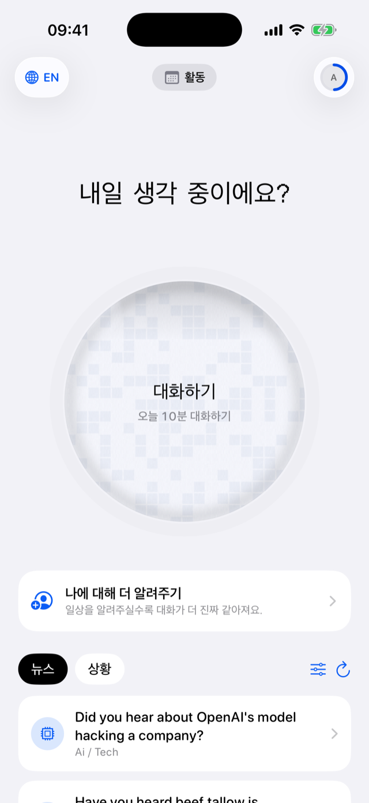
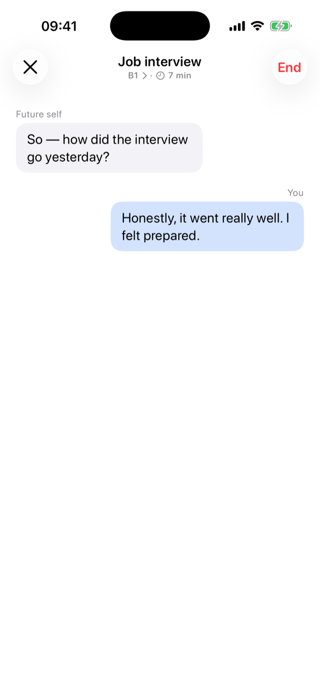
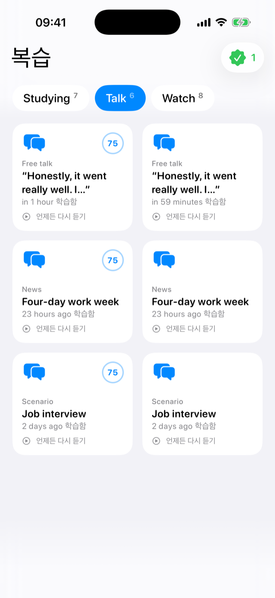
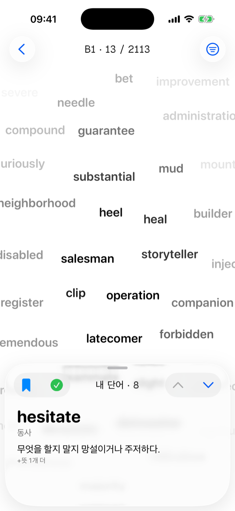
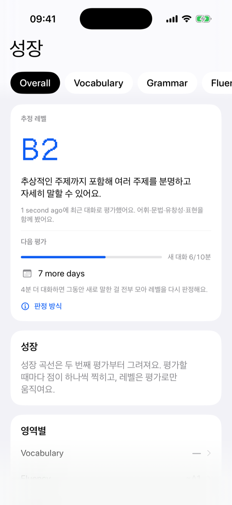
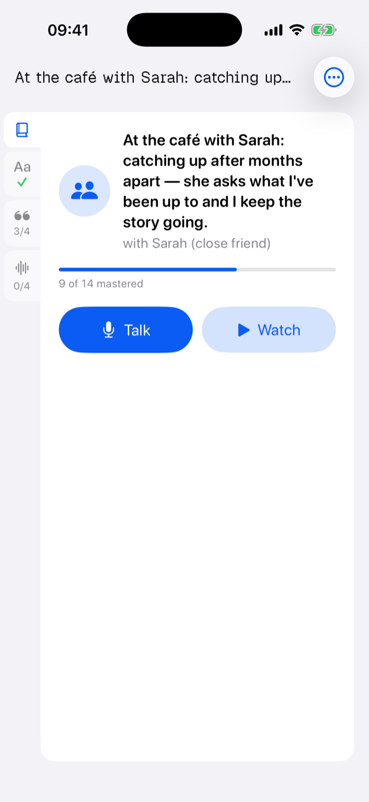
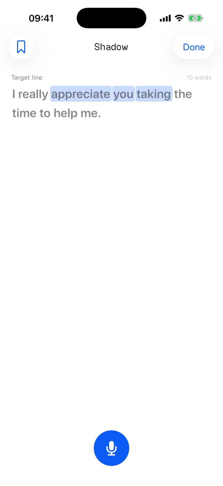
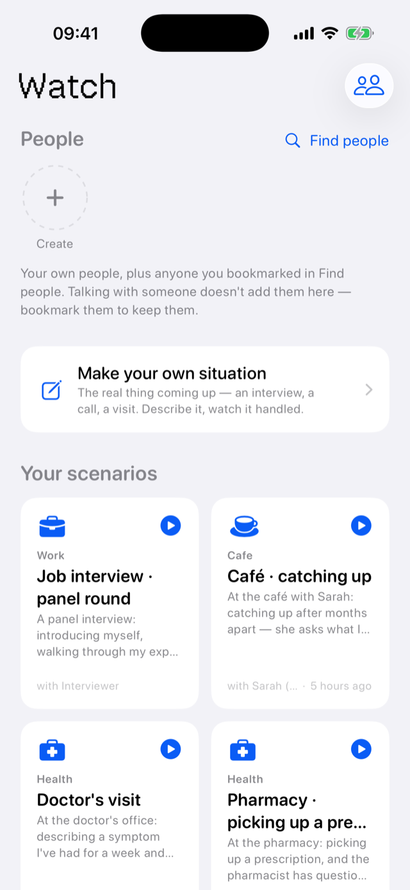

내가 원할 때, 원하는 주제로 대화하고,
나만의 교재로 학습한다.
전화 걸듯, 탭 한 번.
더듬거려도 괜찮다. 매 턴, 고쳐서 돌아온다.
방금 내가 말한 표현·단어·문법 그대로.
단어도, 표현도, 문장도. 자동으로.
실제로 말한 것들로만.





원어민을 아무리 따라 해도,
남의 목소리는
내 것이 되지 않는다.
어차피 실전에서 말할 목소리는
내 목소리다.
그래서, 닿을 수 있는 목표.
원어민처럼이 아니라
미래의 유창한 나.
말이 안 나오는 이유는,
머릿속 생각을 꺼내는 훈련이
안 되어 있어서다.
외운 문장이 아니라,
내 생각을 나만의 언어로.
그게 시작이다.
말하고, 문법과 표현을 고침받고.
내가 실전에서 말한 것이
나만의 교재가 된다.
낯선 목소리가 아니라, 내 목소리니까.
곧 다가올 내 상황을 설정하고, 미리 겪어본다.

따라 할 목소리는 나 자신이다.

연습은 늘 내 사람들과, 내 상황으로.

살아 있는 내 어휘 지도.
어느 쪽이든 7일 무료로 시작합니다.
플러스는 통화 시간에 제한이 없습니다. 말하는 데는 실제로 힘이 들어가니, 아껴 쓸 이유를 따로 만들지 않았습니다. 상황연습은 탭 한 번이면 재생되는 쪽이라 편수로 셉니다 — 두 몫은 서로 별개고, 상황연습을 봐도 통화 시간은 줄지 않습니다. 7일 무료 체험이고 언제든 해지할 수 있습니다.
설정할 때 60초가 전부입니다. 내가 시작한 대화 밖에서는 절대 녹음하지 않습니다.
언제든 다시 녹음하거나 삭제할 수 있습니다. 교체하면 이전 클론은 영구 삭제됩니다.
대화, 드릴, 진행 상황은 서버가 아니라 내 iPhone에 저장됩니다.
설정할 때 60초 녹음 한 번이면 끝이에요. 그 뒤로는 어떤 녹음도 필요 없고, 유창해진 내 목소리가 대화·상황연습·섀도잉을 전부 말해요.
네, 7일 무료 체험이 있어요. 보이스 클론과 첫 인사는 체험 전에도 무료고, 언제든 해지할 수 있어요.
라이트는 한 달 150분의 통화 시간을 사는 거예요. 플러스는 통화에 제한이 없어요. 상황연습은 별도 몫이라 봐도 통화 시간이 줄지 않아요. 복습·다시 듣기·상황 만들기는 언제나 무료예요.
솔직히, 완전 처음이라면 어려워요. 더듬거리면서라도 문장을 만들 수 있는 단계부터가 잘 맞아요. 거기서부터는 매 턴 유창한 버전이 돌아오고, 대화 난이도가 내 레벨에 맞춰지면서 말하는 양이 늘어나요.
실제로 말한 단어와 문장으로 CEFR 레벨(A1~C2)을 측정해요. 의견이 아니라 실측이라, 느는 게 숫자로 보여요.
내가 시작한 대화 밖에서는 절대 녹음하지 않아요. 클론은 언제든 다시 만들거나 삭제할 수 있고, 대화·드릴·진행 기록은 서버가 아니라 내 아이폰에 저장돼요.
영어, 한국어, 독일어를 지원해요. 한국어와 독일어는 아직 베타예요. 언어를 추가해도 요금은 그대로예요.